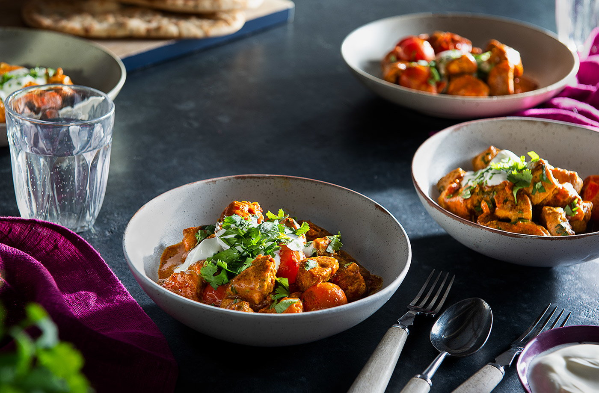

Chicken Tikka Masala

Description
This quick and easy curry recipe uses just a handful of ingredients and
is on the table in 20 minutes.
Serve with your choice of naan or rice (or both) for a winner dinner!
Ingredients
- 580g pack chicken breasts, cut into 3cm chunks
- 3 tbsp Tikka Masala Spice Paste
- 15g pack coriander, roughly chopped
- 300g pack cherry tomatoes
- 200g Tesco Greek-style yogurt
Steps
- Heat 1 tsp vegetable oil in a large, nonstick frying pan over a high heat.
Add the chicken and fry for 6-8 mins, turning occasionally, until evenly golden.
Add the spice paste to the pan, stir to evenly coat the chicken, then add the tomatoes
and 100ml boiling water. Bring to the boil and simmer for 10 mins, stirring
occasionally, until the chicken is cooked through, the tomatoes have started to
break down and the sauce has reduced by roughly a third.
- Remove from the heat and mix in 120g yogurt and the coriander, saving a
little to garnish, until you have a thick, creamy sauce.
- Serve sprinkled with the remaining coriander, yogurt
and a generous grind of black pepper.